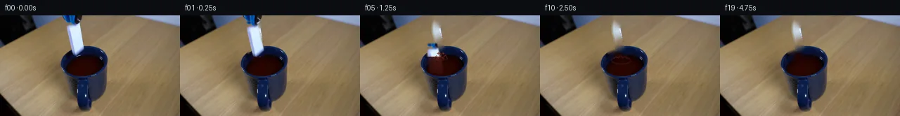

![首帧]()

Round 00
2026-11-04T22:40:40.507345+00:00像素候选变化代码 +232/−0inspection 更新
pixels ef471d0ca94b8739 · code 177bb32f2aa9f41f
查看本轮 generate.py 真实 diff
--- previous/generate.py +++ current/generate.py @@ -0,0 +1,232 @@ +from pathlib import Path + +import cv2 +import numpy as np +from PIL import Image, ImageDraw + +from artifact_io import save + + +ROOT = Path(__file__).resolve().parent +H, W = 144, 256 + + +def feathered_polygon(points, blur=0.75): + """Return an antialiased alpha mask for a polygon in source coordinates.""" + scale = 4 + mask = np.zeros((H * scale, W * scale), np.uint8) + pts = np.rint(np.asarray(points) * scale).astype(np.int32) + cv2.fillPoly(mask, [pts], 255, lineType=cv2.LINE_AA) + mask = cv2.resize(mask, (W, H), interpolation=cv2.INTER_AREA) + if blur: + mask = cv2.GaussianBlur(mask, (0, 0), blur) + return mask.astype(np.float32) / 255.0 + + +def alpha_over(dst, src, alpha): + a = np.clip(alpha[..., None], 0.0, 1.0) + return np.clip(dst.astype(np.float32) * (1 - a) + src.astype(np.float32) * a, 0, 255).astype(np.uint8) + + +def translate_layer(rgb, alpha, dx, dy, angle=0.0, pivot=(106, 34)): + matrix = cv2.getRotationMatrix2D(pivot, angle, 1.0) + matrix[:, 2] += (dx, dy) + moved_rgb = cv2.warpAffine( + rgb, matrix, (W, H), flags=cv2.INTER_LINEAR, + borderMode=cv2.BORDER_CONSTANT, borderValue=(0, 0, 0) + ) + moved_a = cv2.warpAffine( + alpha, matrix, (W, H), flags=cv2.INTER_LINEAR, + borderMode=cv2.BORDER_CONSTANT, borderValue=0 + ) + return moved_rgb, moved_a + + +def liquid_masks(): + liquid = np.zeros((H, W), np.uint8) + cv2.ellipse(liquid, (119, 69), (29, 14), 0, 0, 360, 255, -1, cv2.LINE_AA) + # Keep effects inside the inner lip, not on the blue ceramic rim. + liquid[:54] = 0 + yy, xx = np.mgrid[:H, :W] + air = (yy < 59).astype(np.float32) + return liquid.astype(np.float32) / 255.0, air + + +def make_clean_plate(source): + # Remove only the original held domino and the small grabber at the top. + removal = np.zeros((H, W), np.uint8) + cv2.fillPoly(removal, [np.array([(89, 0), (118, 0), (116, 14), (110, 18), + (121, 53), (116, 61), (103, 64), + (96, 52), (94, 20)], np.int32)], 255) + removal = cv2.dilate(removal, np.ones((3, 3), np.uint8), iterations=1) + clean = cv2.inpaint(source, removal, 4, cv2.INPAINT_TELEA) + + # Inpainting across the rim benefits from a gentle local blend so there is + # no static vertical seam where the white domino used to sit. + seam = np.zeros((H, W), np.uint8) + cv2.ellipse(seam, (111, 58), (13, 10), 0, 0, 360, 255, -1, cv2.LINE_AA) + seam = cv2.GaussianBlur(seam, (0, 0), 2.2).astype(np.float32) / 255.0 + softened = cv2.bilateralFilter(clean, 7, 24, 18) + clean = alpha_over(clean, softened, seam * 0.36) + return clean + + +def add_ripples(frame, t, liquid_alpha): + """Draw restrained impact waves and droplets, clipped to the liquid.""" + if t < 3: + return frame + layer = frame.copy() + line_alpha = np.zeros((H, W), np.float32) + age = t - 3 + decay = max(0.0, 1.0 - age / 15.5) + center = (112 + min(age, 3), 62 + min(age // 3, 2)) + + # Expanding highlights and troughs with tabletop-perspective ellipses. + radii = [3.0 + 1.55 * age, max(1.0, 1.2 + 1.08 * age)] + colors = [(111, 44, 29), (23, 5, 4)] + strengths = [0.56, 0.38] … diff truncated; 145 more lines …